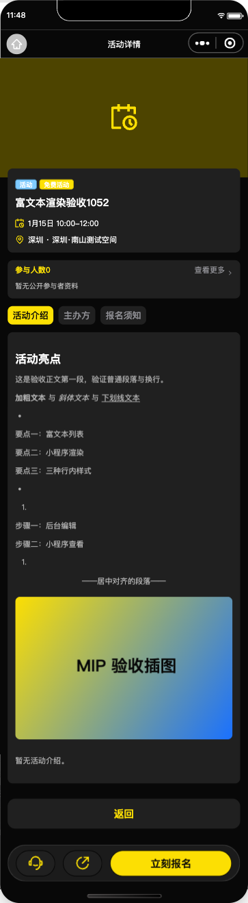
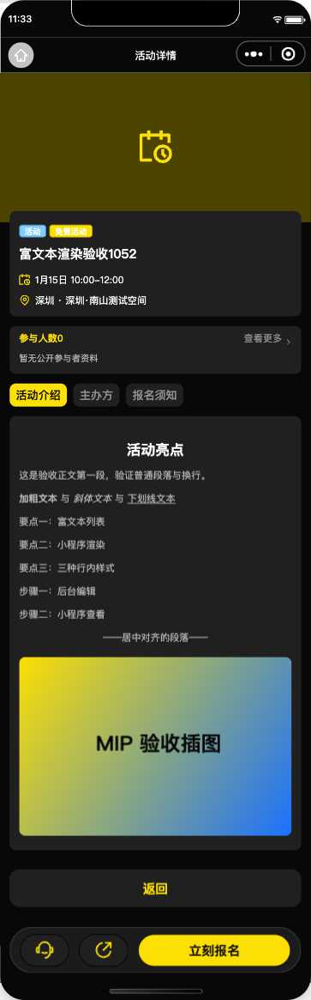
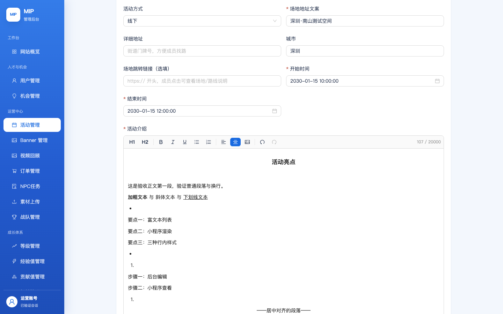
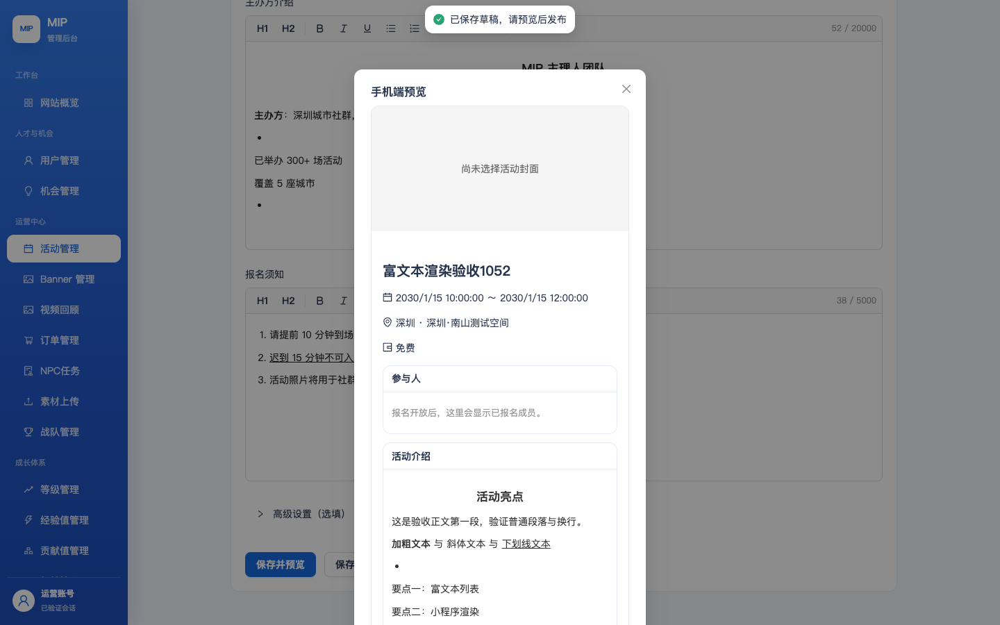
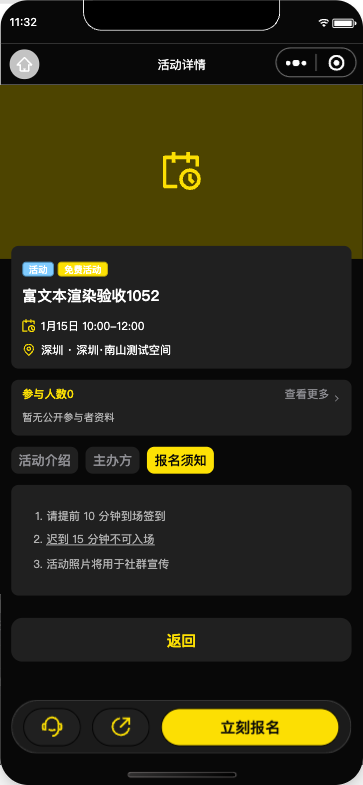
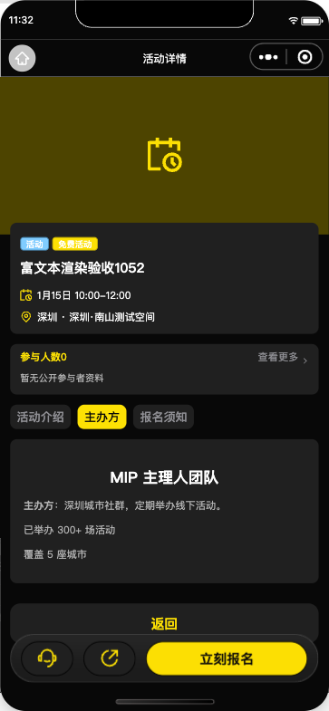
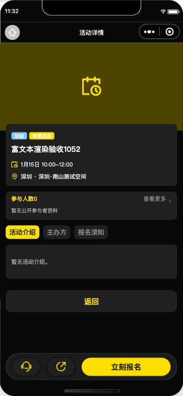
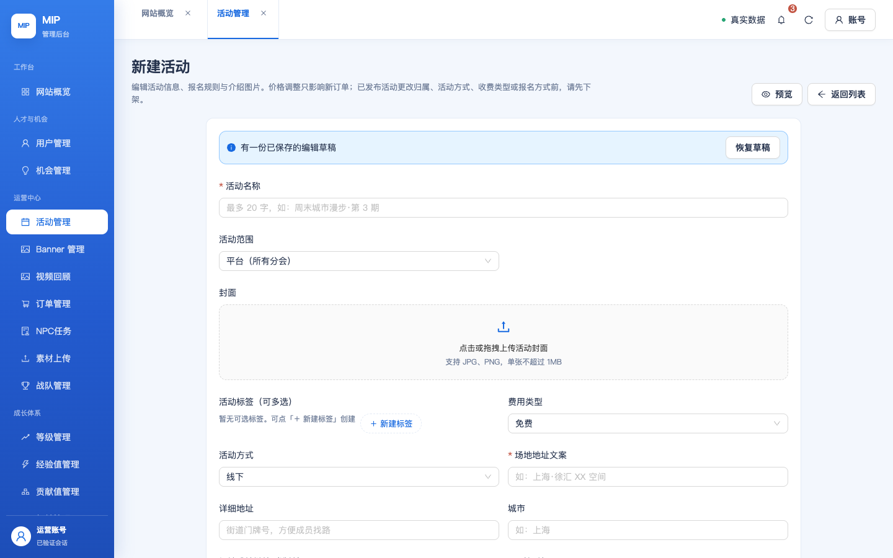

<p> 里、并在内容尾部留下空段落/空列表残影；小程序 rich-text 组件没有 margin 折叠，这些差异被放大成肉眼可见的错位与死空白。另发现一处详情页空态条件读错字段的存量 bug（有介绍也显示「暂无活动介绍」）。以下样例取自测试环境真实入库内容（管理后台 TipTap 编辑器产出，见 §3 A4–A7）：
<h2 style="text-align:center">活动亮点</h2><p></p><p>这是验收正文第一段…</p> <ol><li><p>请提前 10 分钟到场签到</p></li><li><p><u>迟到 15 分钟不可入场</u></p></li>…</ol><p></p><p></p>
| # | 缺陷 | 根因（小程序侧） | 用户可见症状 |
|---|---|---|---|
| D1 | 标题对齐丢失 | rich-content.ts 只对 p 保留 text-align，编辑器（TextAlign 对 heading/paragraph 生效）写出的 <h2 style="text-align:center"> 对齐被丢弃 | 运营设置了居中的栏目标题在详情页全部左对齐 |
| D2 | 列表项间距虚胖 | TipTap 列表项是 <li><p>…</p></li>，解析后 li（margin 5px）与 p（margin 8px）两层块级 margin 在 rich-text（无折叠）中叠加 | 每个列表条目上下多出 ~16px 空隙，列表松散 |
| D3 | 死空白 / 孤儿列表符号 | 编辑器在列表后必然留下尾随空段落，另产生 <ul><li><p></p></li></ul> 空列表残影；空块未裁剪，rich-text 逐块渲染 margin | 内容尾部成片空白；页面上出现孤立的「•」「1.」符号行 |
| D4 | 「暂无活动介绍。」误显示 | 详情页 WXML 空态条件读顶层 hasDescription，而 applyEvent 只写入了 event.hasDescription，顶层字段永远是初始值 false | 只要活动介绍图库为空，有介绍内容也会在正文下方多出一句「暂无活动介绍。」 |


| 文件 | 改动 |
|---|---|
src/modules/mip-events/rich-content.ts | ① 标题（h1–h6 归一化后）与段落同样保留编辑器对齐；② <li><p> 扁平化进列表项（对齐转移到 li，同条目多段落以 <br> 连接），消除双层 margin；③ 新增 pruneDecorativeEmpties 裁掉空段落/空列表/空行内节点，块内行间空格与换行原样保留；④ 解析产出统一走裁剪（markdown 存量路径同样受益） |
src/packages/member/mip-events/detail/index.wxml | 空态条件改读 event.hasDescription（修复 D4） |
src/packages/member/mip-events/detail/index.ts | 删除从未被写入的死字段 data.hasDescription |
tests/mip-event-rich-content.test.ts | 新增 4 组合同测试，样例直接取自测试环境真实入库 HTML（居中标题+空块裁剪 / 列表项扁平化 / 多段落 li / 行间空格保真） |
event-mobile-preview.tsx）是浏览器原生 HTML 渲染，无解析器复刻，上述偏差只在小程序侧显形，管理后台无需同步修改；服务端（mip-events-api 投影、mip-admin-api 富文本护栏）行为核对无偏差。列表符号（• / 数字编号）经真实运行时验证 rich-text 可正常渲染，无需自行合成。| 用例 | 结果 | 说明 |
|---|---|---|
| A1 登录测试后台 | PASS | 真实手机号+密码（BFF 冷启动等待） |
| A2 打开新建活动表单 | PASS | 侧边栏「活动管理」→「新建活动」 |
| A3 基础字段填写 | PASS | 标题/线下/城市/起止时间（showTime 面板「确定」提交） |
| A4 活动介绍富文本编辑 | PASS | TipTap：居中 H2 标题 + 加粗/斜体/下划线混排 + 项目符号列表 + 编号列表 + 居中段落 |
| A5 编辑器插图上传 | PASS | 工具栏插图 → media 通道上传 → 编辑器出现图片节点（持久化 cloud:// 稳定引用） |
| A6 主办方介绍富文本 | PASS | 居中 H2 + 加粗 + 项目符号列表 |
| A7 报名须知富文本 | PASS | 编号列表 + 下划线 |
| A8 草稿保存+预览打开 | PASS | 「保存并预览」→ 手机端预览弹窗 |
| A9 活动发布 | PASS | 预览页一键发布「活动已发布」，DB 复核 PUBLISHED |


发布产物入库复核：description / organizer_introduction / notices 均为受限 HTML，活动介绍含 cloud:// 稳定插图引用——即 §2 缺陷样例的数据来源。
| 用例 | 结果 |
|---|---|
| 存量 markdown：标题/列表/HTTPS 图（回归） | PASS |
| 不安全标记降级与非法图片协议拦截（回归 ×4） | PASS |
| 受限 HTML 行内样式与对齐 / 白名单外丢弃（回归 ×3） | PASS |
| cloud:// 水合前后隐藏与批量去重（回归 ×4） | PASS |
| 新增居中标题保留对齐 + 尾随空段/空列表裁剪（真实入库样例） | PASS |
| 新增列表项扁平化（li 内无嵌套 p，下划线保留） | PASS |
| 新增同一条目多段落以 br 连接且对齐转移到 li | PASS |
| 新增裁剪空块时行间空格保真（加粗 与 斜体 不黏连） | PASS |
命令 npx vitest run tests/mip-event-rich-content.test.ts；关联套件 tests/event-registration-experience.test.ts 21/21 同步通过。
宿主工程同步本分支 dist（MIP_ENV_DIR=envs/test 构建烘焙测试环境），automator 打开真实活动 富文本渲染验收1052（PUBLISHED，含全部格式与 cloud:// 插图）：
| 用例 | 结果 | 断言 |
|---|---|---|
| R1 详情页打开（真实测试环境） | PASS | state=ready 且 eventId 命中 |
| R2 居中标题保留 text-align | PASS | h3 节点 style 含 text-align:center（修复前缺失） |
| R3 空段落/空列表不进节点 | PASS | intro=10 / org=4 / notices=1，无空 children 节点 |
| R4 列表项扁平化 | PASS | ol 3 个 li，无嵌套 p（修复前 nestedP=true） |
| R5 插图已水合为本地路径 | PASS | cloud:// → http://tmp/….png（本地下载管道） |
| R6 渲染 WXML 含对齐样式 | PASS | 页面渲染产物含 text-align:center |
| R7-intro / organizer / notice 三 Tab 截图 | PASS | 逐 Tab 整帧截图（下方展示） |
| R9 负例：无介绍时空态文案出现 | PASS | event.hasDescription=false → 「暂无活动介绍」仍正常出现（空态分支未破坏） |
| R8 活动介绍整页长图 | PASS | 滚动截帧+拼接，363×1165 |




运行时证据：JSON 节点数据与逐步断言见 runtime-results.json；修复前基线断言见 before-checks.json（centeredHeadingLost=true / noticesNestedP=true）。
| 检查 | 结果 |
|---|---|
pnpm verify（小程序：lint + tsc + vitest + 构建 + dist 健康断言） | PASS |
pnpm admin:web:verify（admin-web：lint + tsc + 33 文件 228 测试 + 构建 + 响应式契约） | PASS |
pnpm verify:all（顺序执行两者） | PASS |
git diff --check | PASS |